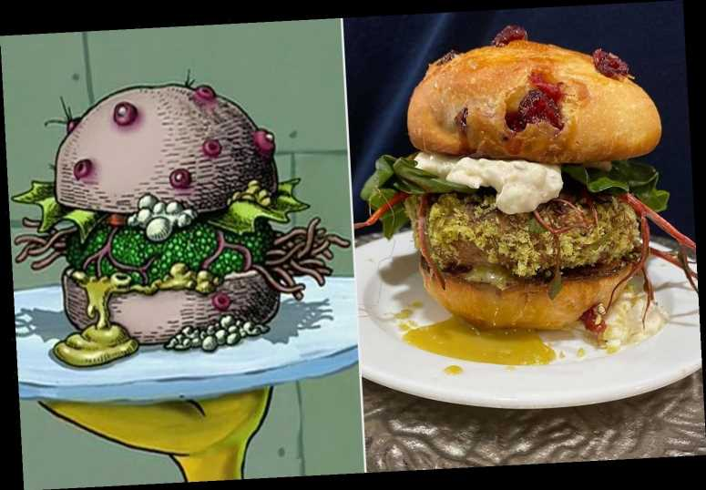

Krabby Patty Recipe

Beware! Plankton is looking for some idiot who left their patties out.
Make your very own Krabby Patties from Spongebob. You will need adult supervision to make this meal unless you are a neglected child who raised themself. All items can be found at your local grocery store. Plus, the aioli sauce sounds to die for.
Ingredients
Burger
- 1 1/3 lb. ground beef
- 2 tsp. Old Bay Seasoning
- 1 tsp. Sea salt
- 4 slices cheddar cheese
King Neptune's Poseidon Powder Aioli
- 1/2 c. mayyonnaise
- 1 tsp. Old Bay seasoning
Sandwich
- 4 sesame seed buns, sliced in half
- ketchup and mustard
- Dill Pickles
- Red Onion, Tomatoes
- 4 leaves of butter lettuce
Steps
- Make the Burger Patties: Heat a grill pan or sauté pan over medium heat. As it heats, combine ground beef, Old Bay, pepper and salt. Form into four equally sized patties, about 1/3 lb apiece. Set on a platter next to the stovetop. Coat the warmed grill pan with cooking spray and place patties on the pan, cooking each side about 4-5 minutes, or until cooked through to your desired doneness.
- Use a large star-shaped cookie cutter to cut each cheese slice into a star shape. Place the star-shaped cheese on each burger patty, in the last 30 seconds or so of cooking, so it melts a little. Set burger patties aside.
- Make King Neptune’s Poseidon Powder Aioli: Stir mayo and Old Bay until thoroughly combined.
- Assemble the Sandwich: Spread Poseidon Powder Aioli on the bottom of each bun. Top with a burger patty, ketchup, mustard, pickles, onion slices, tomato and lettuce. Place the top bun on each burger. Serve.
